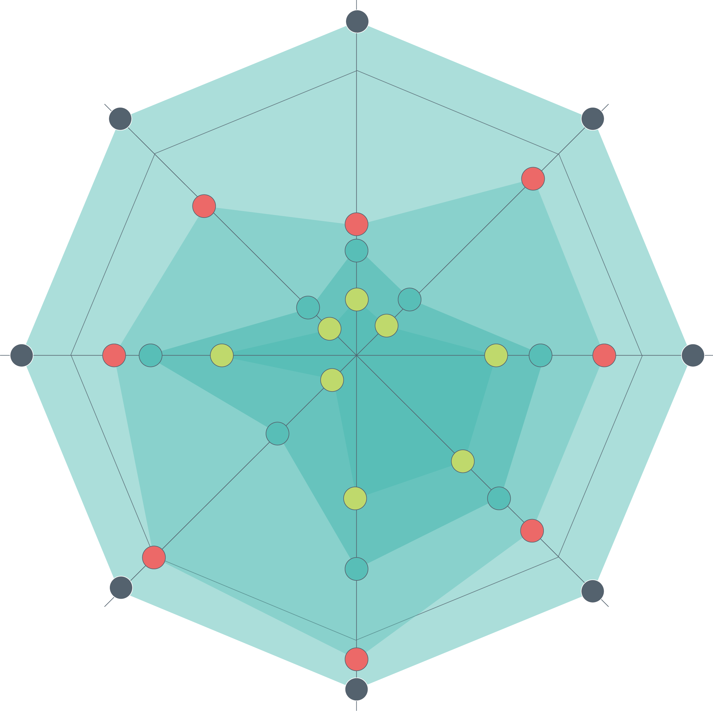

<!DOCTYPE html>
<html>
<head>
    <title>张修铨科技创新大赛 法斗爱犬测评</title>
    <meta charset="utf-8">
    <meta http-equiv="X-UA-Compatible" content="IE=edge,chrome=1" />
    <meta name="viewport" content="width=device-width, initial-scale=1.0, maximum-scale=1.0, minimum-scale=1.0, user-scalable=no" />
    <meta name="MobileOptimized" content="320" />
    <meta name="format-detection" content="telephone=no">
    <meta name="apple-mobile-web-app-capable" content="yes" />
    <meta name="apple-mobile-web-app-status-bar-style" content="black" />


    <link href="css/common.css" rel="stylesheet" />
    <link href="css/style.css" rel="stylesheet">

    <script type="text/javascript" src="js/echarts.min.js"></script>

</head>
<body>

    <div class="wrap">
        <div class="global">

            <div class="text-main19" style="background-image: url('img/q19/bg1.jpg');">
                <div class="leidatu" id="leidatu">
                    <!-- -->
                    <div class="leidatuIn" id="leidatuIn">
                        <div id="main" style="width: 356px;height:445px;"></div>
                    </div>
                    
                </div>

                <a href="javascript:;" class="study-icon">
                    
                </a>
                <ul class="icon-menu">
                    <li class="icon2" onclick="location='index.html';"></li>
                </ul>
            </div>

        </div>

    </div>

    <script type="text/javascript" src="js/jquery.min.js"></script>
    <script type="text/javascript" src="js/loading.js"></script>

    <script>
    var model={
        baseInfo:{
            qa:eval('(' + localStorage.getItem('datilist') + ')'),
            scores:[0,0,0,0,0],

            jianyi:[],
            wjianyi:{w1:[],w2:[],w3:[],w4:[],w5:[]},
            myChart: null
        },
        option:{
            title: {
                text: ''
            },
            color: ['#72ACD1'], //  
            legend: {
                data: [ '用户'],
                show:false,

            },
            radar: [
                {
                    indicator: [
                        { text: '行为管理', max: 100 },
                        { text: '健康管理', max: 100 },
                        { text: '健康检测', max: 100 },
                        { text: '营养问题', max: 100 },
                        { text: '疾病问题', max: 100 },
                    ],
                    center: ['50%', '50%'],
                    radius: '48%',
                    name: {
                     formatter:'{value}',
                     textStyle: {
                        color: '#2B2B2B' //72ACD1
                     }
                     },

                }
            ],
            series: [

                {
                    name: '答题得分',
                    type: 'radar',
                    data: [

                        {
                            value: [0, 0, 0, 0, 0],
                            name: '用户',
                            areaStyle: {
                                normal: {
                                    opacity: 0.9,
                                    color: new echarts.graphic.RadialGradient(0.5, 0.5, 1, [
                                        {
                                            color: '#B8D3E4',
                                            offset: 0
                                        },
                                        {
                                            color: '#72ACD1',
                                            offset: 1
                                        }
                                    ])
                                }
                            }
                        }
                    ]
                }
            ]
        },
        eventModel:{
            addJianYi:function(wd,item){
                if (!item.ischoose)
                    return;              
            
                var m = 0;

                if(wd==1){
                    model.baseInfo.scores[0] += item.scroe;

                    for (var k = 0; k < model.baseInfo.wjianyi.w1.length; k++) {
                        if (model.baseInfo.wjianyi.w1[k] == item.tips || !item.tips) {
                            m = 1;
                            break;
                        }

                    }

                    if(m==0)
                        model.baseInfo.wjianyi.w1.push(item.tips);
                }                    
                else if(wd==2){
                    model.baseInfo.scores[1] += item.scroe;

                    for (var k = 0; k < model.baseInfo.wjianyi.w2.length; k++) {
                        if (model.baseInfo.wjianyi.w2[k] == item.tips || !item.tips) {
                            m = 1;
                            break;
                        }
                    }

                    if (m == 0)
                        model.baseInfo.wjianyi.w2.push(item.tips);
                }                    
                else if(wd==3){
                    model.baseInfo.scores[2] += item.scroe;

                    for (var k = 0; k < model.baseInfo.wjianyi.w3.length; k++) {
                        if (model.baseInfo.wjianyi.w3[k] == item.tips || !item.tips) {
                            m = 1;
                            break;
                        }

                    }

                    if (m == 0)
                        model.baseInfo.wjianyi.w3.push(item.tips);
                }                    
                else if(wd==4){
                    model.baseInfo.scores[3] += item.scroe;

                    for (var k = 0; k < model.baseInfo.wjianyi.w4.length; k++) {
                        if (model.baseInfo.wjianyi.w4[k] == item.tips || !item.tips) {
                            m = 1;
                            break;
                        }

                    }

                    if (m == 0)
                        model.baseInfo.wjianyi.w4.push(item.tips);
                }                    
                else if (wd == 5) {
                    model.baseInfo.scores[4] += item.scroe;

                    for (var k = 0; k < model.baseInfo.wjianyi.w5.length; k++) {
                        if (model.baseInfo.wjianyi.w5[k] == item.tips || !item.tips) {
                            m = 1;
                            break;
                        }

                    }

                    if (m == 0)
                        model.baseInfo.wjianyi.w5.push(item.tips);
                }            
                    
            },
            init: function () {
                
                if (model.baseInfo.qa && model.baseInfo.qa.length > 0) {
                    var len = model.baseInfo.qa.length;
                   
                    for(var i=0;i<len;i++){

                        var len2 = model.baseInfo.qa[i].qs.length;
                        
                        for(var j=0;j<len2;j++){

                            model.eventModel.addJianYi(model.baseInfo.qa[i].weidu,model.baseInfo.qa[i].qs[j]);
                        }
                    }
                   
                }

                localStorage.setItem('_jianyi',JSON.stringify(model.baseInfo.wjianyi));
                
                model.option.series[0].data[0].value = model.baseInfo.scores;

                model.baseInfo.myChart = echarts.init(document.getElementById('main'));
                model.baseInfo.myChart.setOption(model.option);
            }
        }
    }

    $(function () {
        $('#main').height($('#leidatuIn').width() * 0.8);
        $('#main').width($('#leidatuIn').width() * 0.8);
        model.eventModel.init();

        
    });


    </script>

</body>
</html>